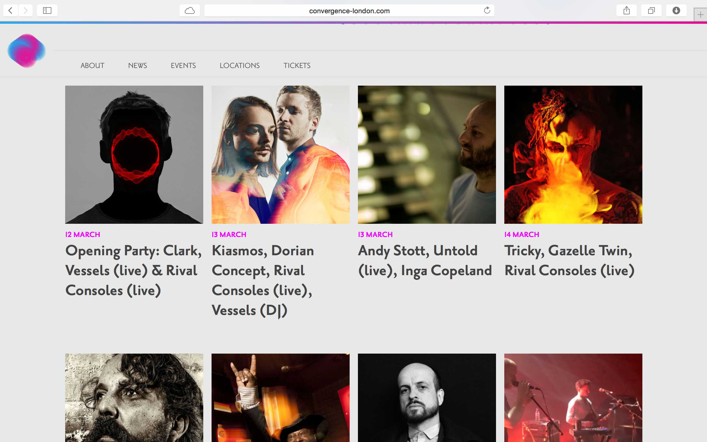
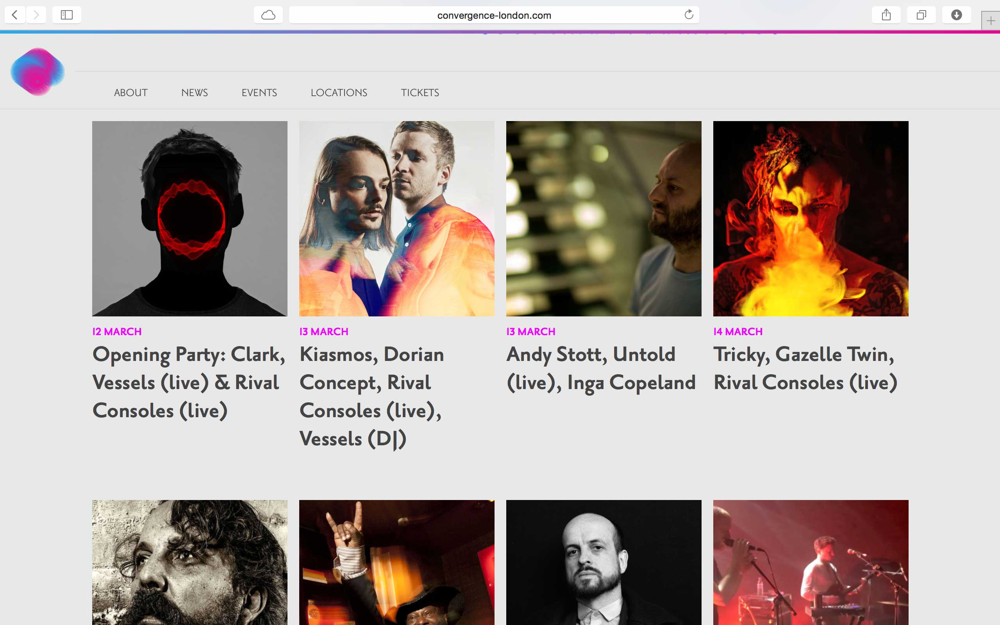

paulcarvill.com
Juice VCR
This is the website for an online music television channel, showcasing visuals from DIY and independent artists.
Jessica's main requirements were a strong visual identity combined with an unintrusive interface, allowing viewers to focus on the music and video content.
The site is content-managed using Craft CMS. Videos are curated from YouTube and Vimeo and embedded using Video.js. Backbone is used for the interface and interactions. SVG is used for all icons and images.
Custom features include the vertical progress indicator, fullscreen interface option, keyboard shortcuts and an algorithmic playlist generator to ensure you get a good mix of old and new music.
This is an antipattern project in collaboration with Suki

Solid Steel
A multiplatform website for the longest running mix show in the world, produced in association with Ninja Tune.
Solid Steel wanted to relaunch their website in 2015 to celebrate running for 25 years, as well as a new partnership with Serato. As part of these celebrations the website is being used as a platofrm to showcase 50 classic mixes from the past 25 years. The main objectives were:
- Showcase the latest mix each week – made up of two hour-long Soundcloud tracks – along with a tracklist, synopsis and option to directly download an MP3 for each hour of the mix.
- Make the site accessible on mobile
- Update the site with a new, contemporary design, including the new logo
- Add a search function and enable easy navigation of the hughe mix archive
- Enable 50 classic mixes to be highlighted
This required a complete update of the overall design and functionality of the site, its backend and CMS. The new design and experience takes fans directly to the current broadcast, and for the first time 27 years of archive music has been made easily accessible and searchable. The interface design drives core principles of modernisation and simplicity whilst keeping the homepage relevant and personal to each listener.
The site is a bespoke Ruby On Rails backend and CMS. New mixes & tracklists are added simply by uploading the spreadsheet which DK maintains for tracking royalty payments for PRS. content-managed using Craft CMS. Rails exposes all the archive data via an API. The frontend is Ember.js, the Soundcloud SDK, and Canvas for the audio wave. Using a combination of Ember and Soundcloud means listeners can play the mixes uninterrupted while continuing to browse around the site.
This is an antipattern project in collaboration with Suki

Indie Label Cup
Simple fundraising website for the Indie Label Cup, a charity football tournament organised by a group of independent record labels including 4AD, Hospital, Bella Union, Heavenly, Ninja Tune, Fabric, Domino and R&S.
Realistic physics effects allow players to kick the football around the screen Subbuteo-style. Atmospheric crowd noises enhance the experience. Scoring a goal released a rainbow-coloured celebration and the honking of airhorns. Works well across mobile and touch devices too.
PhysicsJS was used for the simulation. Otherwise it's a simple static site deployed onto Github pages.
This is an antipattern project in collaboration with Suki
 

Shimell and Madden
Website for the Shoreditch based festival of music + art + technology.
Convergence takes place at Village Underground, Barbican, St John at Hackney and the Troxy, amongst other venues. Creative Director Glenn Max and the pther organisers wanted a web presence which reflected the experimental nature of the festival, provoking and inspiring audience interaction and rewarding those of an inquisitive nature.
The website is a custom Rails application. The frontend uses a canvas and some custom code to produce a springy mesh of converging dots, which can be manipulated by users until they explode in a frenzy of antigravity. But they will always eventually converge again... Key features include the physics-based interaction, beautiful responsive design, location map of venues, downloadable mix-tapes and ticket links in partnership with See tickets.
This is an antipattern project in collaboration with Suki
Shimell and Madden
Website and ecommerce functionality for a jewellery company producing high quality, hand-crafted jewellery which explores themes of science, nature and time.
Shimell and Madden occupy a space where craft, art and fashion intersect. They required a website that reflected their precision craft and attention to detail, was easy for them to update, and which functioned perfectly across all platforms.
The site is a bespoke Ruby On Rails backend and ActiveAdmin CMS. The ecommerce section is provided by Shopify with a custom theme to match the main site. Features include randomised infinite scroll of all the duo's jewellery pieces, archive search by category and date, and a beautiful responsive design.
This site is a collaboration with the designer Robert Holmqvist